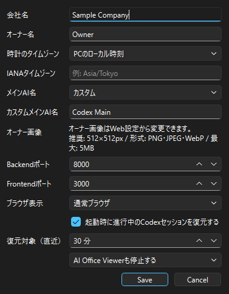
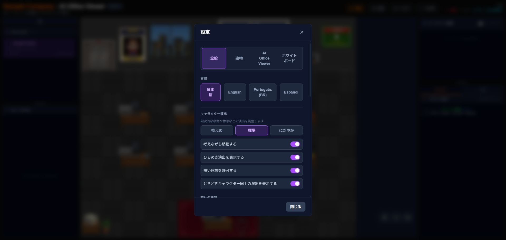

設定
Managerの「設定」と、ブラウザで開く「Web設定」を使い分けます。
{kind=link}

Managerの「設定」
| 項目 | 内容 |
|---|---|
| 会社名 / オーナー名 | Viewer内の会社・オーナー表示を変更します。 |
| 時計のタイムゾーン | PCのローカル時刻、またはIANAタイムゾーン（例: Asia/Tokyo）を選びます。 |
| メインAI名 | 自動名または50文字以内のカスタム名を選びます。 |
| Backendポート / Frontendポート | 1024～65535。2つを同じ値にはできません。通常は変更不要です。 |
| ブラウザ表示 | 通常ブラウザまたはAI Office Viewer専用表示を選びます。 |
| 起動時に進行中のCodexセッションを復元する | 有効時、直近1～1440分（既定30分）の進行中セッションを探します。 |
| 終了時動作 | Manager終了時にAI Office Viewerも停止するか、動作を続けるかを選びます。 |
ポートや一部の起動設定は、保存後の再起動で反映されます。
{kind=link}

「Web設定を開く」
Viewer内の設定画面を開きます。言語は日本語・英語・スペイン語・ポルトガル語（ブラジル）に対応します。会社名、オーナー情報、ポート、ブラウザ表示、Replay設定を変更できます。
オーナー画像
- 対応形式: PNG、JPEG、WebP
- 最大容量: 5MB
- 対応解像度: 64×64～4096×4096px
- 推奨: 512×512px
- 正方形でない画像は中央を正方形に切り抜いて表示
Web設定で画像を選択し、プレビュー確認後に「画像を変更」を押します。「デフォルトに戻す」も利用できます。
Replay
- 履歴保存の有効/無効
- 保持期間: 7日、30日、90日、無期限
- 待機時間を圧縮
- 既定速度: 0.5x、1x、2x、4x、8x
- 時計表示: 記録時刻または現在時刻
ホワイトボード設定
Managerの「ホワイトボード設定」から直接開けます。表示モードは「TODO」「今日の目標」「今週の目標」「メモ」「カスタム」から選び、内容と自動切替を設定できます。自動切替間隔は5～3600秒です。
設定・データ・ログの場所
| フォルダ | 内容 |
|---|---|
config | 共有設定とオーナー画像 |
data | Portable版の履歴データベースなど |
logs | Manager、Backend、Frontendのログ |
runtime | 実行に必要な同梱ランタイム。通常は編集しません。 |
JSON設定ファイルを直接編集するより、ManagerまたはWeb設定を使ってください。更新前は
configとdataをバックアップしてください。